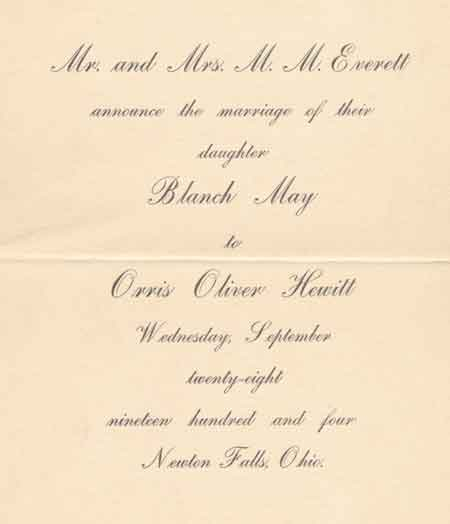
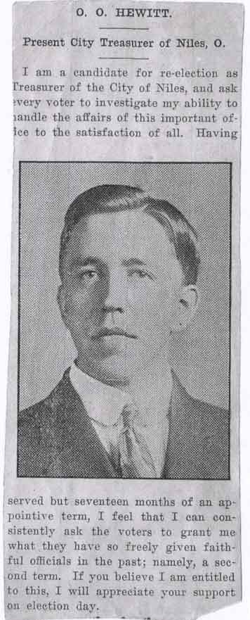

Ward-Thomas Museum


O.O. Hewitt—Waging War on the Niles Underworld
Ward — Thomas
Museum
Home of the Niles Historical Society
503 Brown Street Niles, Ohio 44446
Click here to become a Niles Historical Society Member or to renew your membership
Click on any photograph to view a larger image, click on image again to zoom into photograph.
|
Orris Oliver Hewitt |
Director
of Niles Public Safety. Hired first as a bookkeeper, he was elected a member of the Board of Directors and secretary of the company in 1905. The other members of the Board were: Frank C. Robbins, President; George B. Robbins; William Herbert, vice-president; H.J. Robbins, general manager and treasurer. Active in civic affairs, Hewitt was selected
by the Democrat party in 1909 as their mayoral candidate. His
Republican counterpart, Charles Naylor, however won the
mayoral election. He was treasurer for the city of Niles for one
term in 1918 and served two terms as safety director under Mayor
Harvey C. Kistler. He also served in the county treasurer’s
office under William O. Williams for eight years. An active member of the First Presbyterian church, he served as an elder and trustee for 40 years, was formerly superintendent of the Sunday school and was elected ruling elder for life. Mr. Hewitt was a member of Mahoning Lodge, F
&AM., No. 394 and attended Lordstown schools and Warren Business
College, he taught school at Lordstown for 10 years. He had been
employed at the Niles Forge Company for 25 years. |
|
| |
||
Orris Oliver Hewitt, born January 16, 1879 in Newton Township, was the son of Levi and Anne Kistler. |
|
 He married Blanche M. Everitt on September 28, 1904. The couple first lived at 624 Robbins Avenue in Niles, Ohio. |
| |
||
Hewitt was selected by the Democrat party in 1909 as their mayoral candidate. |
1909 city voting ballot for the Democrat, Republican and Socialist candidates and their respective offices. A male voter could cast a ballot for individuals or a straight party ticket.
Right: Advertisement for Hewitt campaign for
City Treasurer. |
 |
| |
||
|
Photograph of the Niles Police Dept.- about 1915. Seated left to right - Officer Williams, Officer Link Rounds, Mayor F.E. Bryan (1914-1916), unknown, Officer Fitzpatrick. Standing left to right: Officer Richard Neiss, Officer Charles Mullens, unknown, Officer Lally. Officer Charles Berline, unknown, unknown and Officer Charles Nicholas. |
Waging
War on the Niles Underworld As Safety Director, Hewitt not only focused his attention on crime in the streets, but ineptitude and corruption within the police department as well. On two occasions soon after taking office, the Kistler Administration proved that it meant business. In late March, 1924, Officer William H. Mullens was suspended from the force for sleeping at his post. He was also charged with conduct unbecoming an officer and intoxication while on duty. Two months later, Officer Joseph Mears was fired by Police Chief Leonard Round for allegedly reporting to duty in an intoxicated state. |
|
Niles City Building on State Street, erected in 1928, was partly funded by fines against bootleggers levied by Mayor Harvey Kistler. |
While Mears never appealed the Chief’s decision, Mullens retained lawyers P.N. Fusco and R.H Patchin. The hearing was held March 27, 1924 and the Civil Service Commission sided with Mullens. Eighteen months later, Mullens lost his job when he again was found to be intoxicated while on the job and this time the Kistler administration documented their evidence and brought in witnesses. The vice raids against gambling and bootlegging produced a steady source of income for the Mayor’s Court; in July 1925 nearly $4,000 in fines and license fees was brought into the city treasury. By 1928, enough money had been accumulated to build the new City Building on West State Street which is the current (2021) location of the Niles City Building. |
|
| |
||
Hewitt, Kistler and Service Director J.H. Morall strengthened their resolve to combat vice operations in the city. For their efforts in trying to control these illegal and immoral activities, however, these crime fighters paid a heavy price. In March 1924, Chief Round’s home was bombed as a warning to back off the raids. Hewitt often conducted liquor and gambling raids, not revealing his plans until the police officers who accompanied him were enroute to their objective. On many of these raids, Hewitt wielded an axe, which he used with devastating effect on the speakeasy doors. To the left is a scan of the letter sent to O.O. Hewitt detailing corruption in the police department ranks. |
||
Bombing of Hewitt family residence. |
On August 18, 1926, Hewitt and his family nearly paid with their lives when a blast reverberated through the night and left their home in shambles. The Safety Director, his wife and two children, Lee and Ruth, were asleep when the explosion occurred. Because the bomb had been placed next to a brick pier which supported the porch, the force of the blast was deflected outward, away from the home. Thus no one was seriously injured. The safety director’s unprecedented policy of personally leading raids against city vice operations may have been the reason for the destruction of his home. Other bomb investigators believed the bombing had stemmed directly from a large raid Hewitt had recently launched against a local underworld figure in which an entire truckload of beer had been confiscated and five men arrested. Whatever line of thought existed, authorities interpreted the bombing of Hewitt’s house as a warning that the vice raids must stop. |
|
Click on the links: Harvey Kistler oral history by Steve Papalas
O.O. Hewitt oral history by Steve Papalas
|
After the bombing, the administration virtually declared war on the underworld; they formulated a joint strategy for an all-out assault on the criminal element in Niles enlisting Federal Prohibition agents, Immigration Inspectors and any state agents needed to close down vice operations and deport habitual offenders who did not have U.S. citizenship. Although the Hewitts had escaped serious injury, Hewitt’s wife had been so terrified by the bombing that she found it uncomfortable to stay in the house at night and became increasingly opposed to her husband’s continued participation in the Kistler Administration. Eventually the Hewitt family moved out of the neighborhood and the courageous safety director was later destined to resign from city politics before the expiration of his cousin’s term in office. Those responsible for the bombing of the Hewitt
home soon realized that their warning for the service director
to stop further raids had backfired. Several residents held a
town meeting to demand a clean-up of the city’s criminal
element and set a reward fund for the arrest and prosecution of
the bombers and the Niles City Council hired a secret undercover
agent whose duty was to gather evidence against major underworld
elements. |
|
1925 lawsuit by police officer Joseph Gerard against City of Niles and Safety Director, O.O. Hewitt. |
 |
|
 |
||
 |
||
 |
||
|
|
||


{kind=link}
{kind=link}
{kind=link}
{kind=link}
{kind=link}
{kind=link}
{kind=link}
{kind=link}
{kind=link}
{kind=link}
{kind=link}
{kind=link}